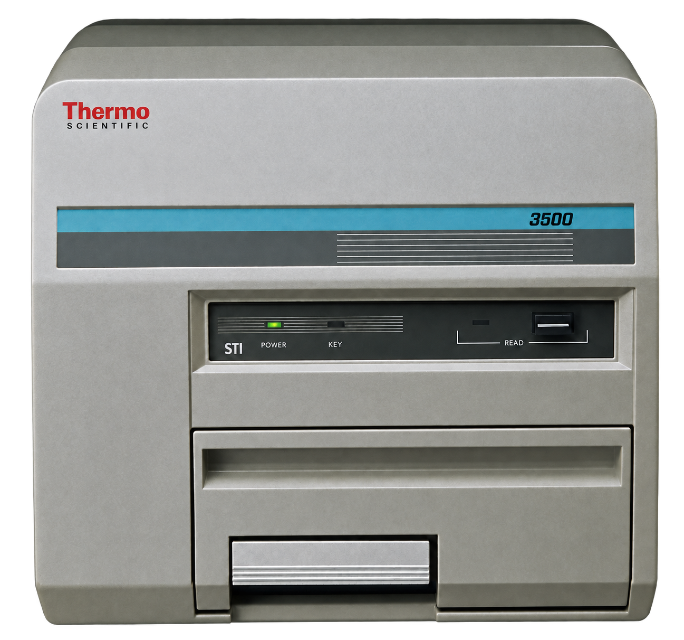
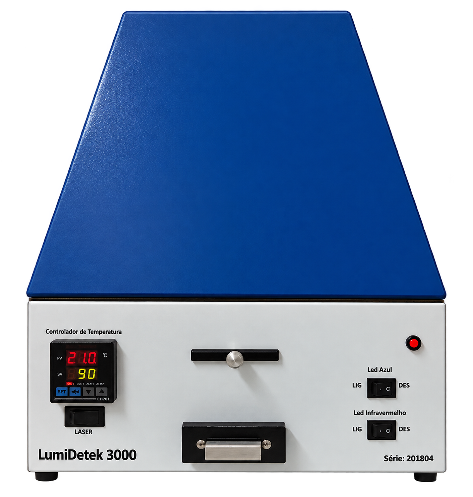
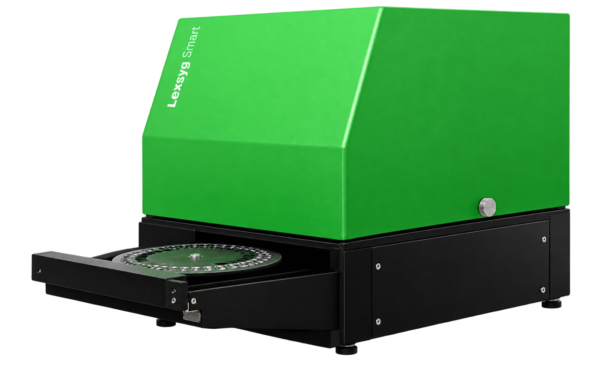
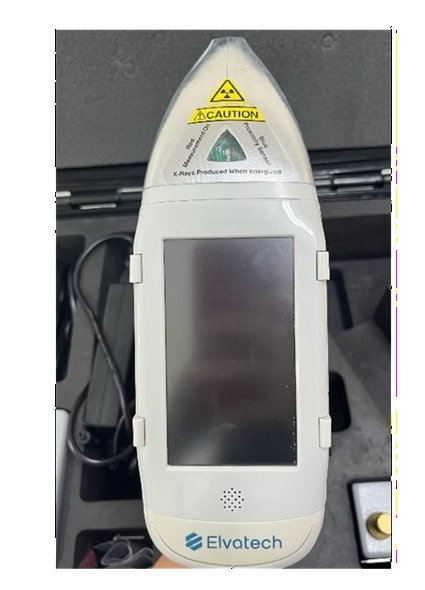
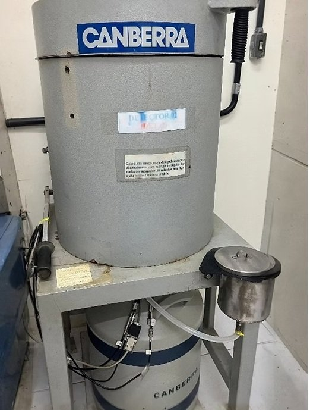

LDRD
LDRDLDRD / Instalações e equipamentos
Instalações e equipamentos
Preparação de amostras, dosimetria e datação: os ambientes e a instrumentação do laboratório.
 Ampliar foto
Ampliar foto
Da preparação
à medida.
Em aproximadamente 30 m², o LDRD reúne três salas destinadas à recepção, ao armazenamento e à preparação de amostras, à aquisição de dados e à realização de medidas.
Estrutura de preparação
Bancadas, peneiras, estufa e forno para tratamento térmico dão suporte ao preparo das amostras antes das análises.
Medidas de
luminescência
Leitoras para dosimetria por termoluminescência (TL) e luminescência opticamente estimulada (OSL), utilizadas em estudos de doses absorvidas e datação.


Ampliar fotoHarshaw 3500
Thermo Fisher Scientific
Medidas dosimétricas por termoluminescência (TL).


Ampliar fotoLumiDetek 3000
Leitora OSL
Determinação de doses absorvidas e estudos de datação por luminescência opticamente estimulada.


Ampliar fotoLexsyg Smart
Freiberg Instruments
Um sistema de leitura para as duas técnicas: termoluminescência e luminescência opticamente estimulada.
A composição
dos materiais
A fluorescência de raios X (XRF) permite a caracterização química elementar de materiais. O laboratório dispõe de instrumentação de bancada e portátil.
- µXRF ARTAX Bruker
- Análise química elementar rápida e não destrutiva, com aplicações em estudos geológicos, ambientais e de materiais.
- ProSpector LE Elvatech
- Analisador portátil para medidas in situ e identificação de elementos químicos em aplicações de campo.


Ampliar foto

Ampliar fotoRadiação ambiental
e espectrometria gama
O detector de germânio hiperpuro (HPGe) é empregado na estimativa da radiação ambiental associada às amostras de datação.
O sistema Canberra, com multicanal e acessórios, permite a identificação e a quantificação de radionuclídeos por espectrometria gama de alta resolução.
Detector HPGe Canberra